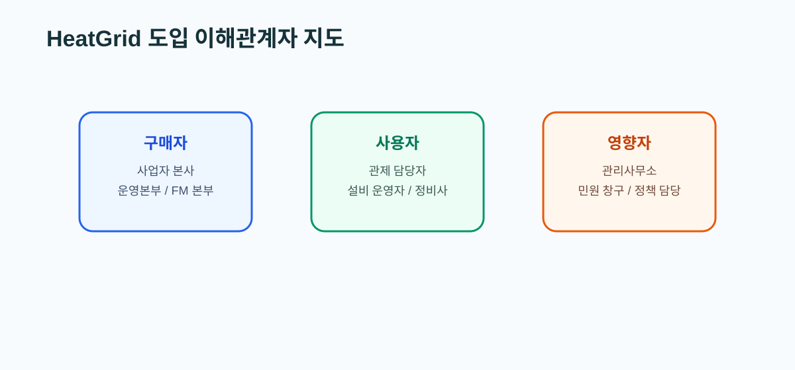

11. 국내 정책, 시장, 사업자 가이드
왜 지금 이 문서를 읽는가
좋은 기술 문서만으로는 서비스가 되지 않는다. 누가 구매하고, 누가 사용하고, 누가 도입을 막거나 밀어주는지 알아야 HeatGrid의 초기 고객과 메시지가 선명해진다.

국내 시장 이해
- 국내 집단에너지 시장은 공공과 민간 사업자가 함께 운영한다.
- 지역난방 사업자, FM 조직, 관리사무소, 협력 정비업체가 각자 다른 역할을 가진다.
- 정책 방향도 AI, 효율화, 스마트 유지관리, 디지털 전환과 맞물려 있다.
역할 구분 표
| 구분 | 대표 주체 | HeatGrid와의 관계 | 무엇을 중요하게 보는가 |
|---|---|---|---|
| 구매자 | 지역난방 사업자 본사, 운영본부, FM 본부 | 예산과 도입 결정 | 민원 감소, 운영 효율, 재출동 감소 |
| 사용자 | 관제 담당자, 설비 운영자, 현장 정비사 | 실제 사용 주체 | 빠른 판단, 작업지시 품질, 설명 가능성 |
| 영향자 | 관리사무소, 입주자 민원 창구, 정책 담당 | 도입 분위기와 우선순위에 영향 | 민원 대응 속도, 안전, 신뢰 |
HeatGrid에 직접 닿는 메시지
- 구매자는 “AI가 정확한가”보다 “운영 리스크를 줄였는가”를 본다.
- 사용자는 복잡한 모델보다
지금 무엇을 먼저 해야 하는지를 원한다. - 영향자는 민원 감소와 대응 시간 단축을 더 직관적으로 받아들인다.
상황 예시
지역난방 사업자와 FM사의 관점 차이
- 지역난방 사업자는 권역 전체의 안정 운영과 민원 파급을 본다.
- FM사는 특정 건물의 작업 효율과 출동 품질을 더 직접적으로 본다.
- 따라서 HeatGrid는 사업자에게는
우선순위화와 재계획, FM사에는좋은 작업지시와 점검 순서를 더 강하게 보여줘야 한다.
초심자 체크포인트
- 고객, 사용자, 영향자를 구분해서 설명할 수 있는가
- 왜 HeatGrid의 핵심 가치가 단순 예측이 아니라 운영 효율인지 말할 수 있는가